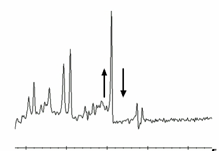

- 00000018WIA30050F20GYZ
- id_131063495.1
- Sep 19, 2022 3:47:29 AM
PROBE/SV calibration and SNR tests
Prerequisites
| Personnel requirements | |||
|---|---|---|---|
| Required persons | Preliminary requirements | Procedure | Finalization |
| 1 | - | 90 minutes | - |
| Tools and test equipment | |||
|---|---|---|---|
| Item | Quantity | Part number | Manufacturer |
| MRS phantom without the loader is required for the PROBE SNR and is used for the tuning process. | 1 | 2152220 | - |
| Form Support for ECMT and Phantom (included in system) | - | 5554839 | - |
| Foam Support for Head Sphere (included in system) | 1 | 5554840 | - |
| Required conditions |
|---|
| The PROBE-S option (M3333WH) is required on-site to complete both the PROBE-S Cal & SNR Check and the PROBE-P Cal & SNR Check. |
| The PROBE-P option (M3333WG) is required on-site to complete both the PROBE-P Cal & SNR Check or the PROBE-P SNR Check only. |
About this task
- PROBE-P option
- PROBE-S option which includes PROBE-P
- Breast Spectroscopy
Overview
About this task
- Echo peak location calibration (automated PROBE tuning script)
- PROBE signal-to-noise ratio (SNR) performance test
PROBE/SV tuning and SNR procedure (echo peak location calibration)
Setup
Procedure
PROBE tuning and SNR check procedure
Procedure
Troubleshooting
About this task
Note: This troubleshooting procedure does not apply to software version 30 and later.
Example SNR spectra
About this task
Procedure
- Figure 8 shows a correctly tuned spectra. Pay particular attention to the base (left and right) of the NAA (NA) peak; this is the largest peak located at the center of the spectrum.
Figure 8. Correctly tuned PROBE SNR spectra 
- Refer to Figure 9 and Figure 10 to view spectra with an uncalibrated tuning parameter (a delta was offset + or - from the correct value by 0.5 units).
Figure 9. Incorrectly tuned PROBE SNR spectra 
Figure 10. Incorrectly tuned PROBE SNR spectra 